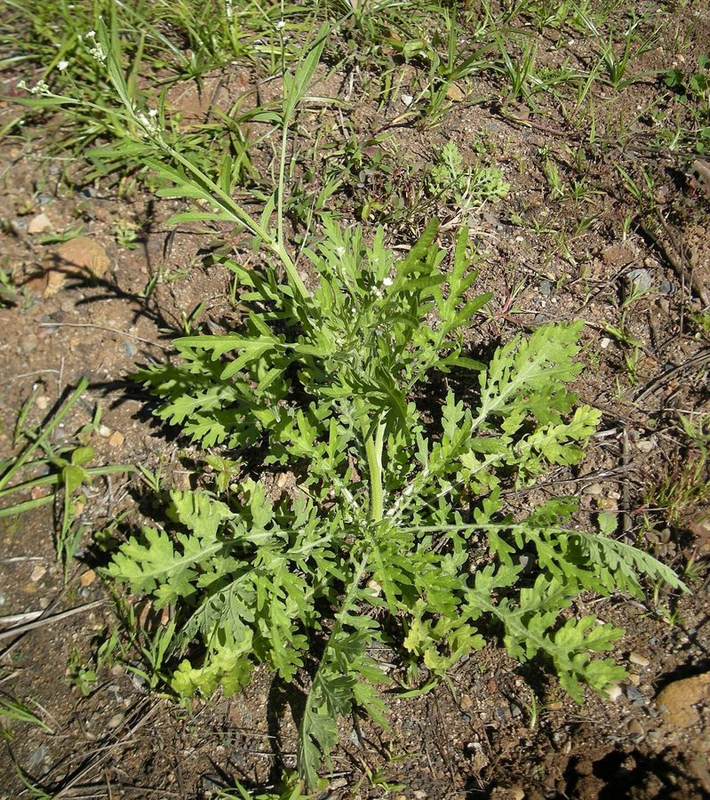

गाजर घासCongress Grass
Parthenium hysterophorus · Asteraceae · FLR-0001

- Scientific name
- Parthenium hysterophorus L.
- Family
- Asteraceae
- Hindi
- गाजर घास / काँग्रेस घास
- Status here
- invasive
- IUCN
- not evaluated
When to look कब देखें
Present all year.
गाजर घास / Congress Grass
Parthenium hysterophorus L. — Asteraceae
गाजर घास — पूर्वी UP की सड़कों और खेत-किनारों का सबसे परिचित आक्रामक खरपतवार। मूलतः मध्य अमेरिका की, 1950–60 के दशक में आयातित गेहूँ के साथ भारत आई। जड़ों से एलिलोपैथिक रसायन छोड़ती है — जहाँ यह उगती है, देशी पौधे नहीं पनपते। एक पौधा एक मौसम में 10,000–25,000 बीज देता है जो मिट्टी में कई वर्षों तक जीवित रहते हैं। खेत मजदूरों में त्वचा-एलर्जी और दमे का कारण। हर किसान इसे पहचानता है, नष्ट करता है — लेकिन यह बार-बार आती है क्योंकि इसे समझे बिना नहीं जाती।
Quick Identification त्वरित पहचान
| Feature | Description |
|---|---|
| Leaves | Deeply pinnately lobed like carrot leaves — hence gajar ghaas; soft and hairy; light grey-green |
| Stem | Green, highly branched, covered in white hairs; woody at base in older plants |
| Height | 30 cm to 1.5 m depending on soil and moisture |
| Flowers | Tiny white heads (2–3 mm) in flat-topped clusters; blooms nearly year-round |
| Smell | Mild unpleasant odour when leaves are crushed |
| Seeds | Tiny, black, wedge-shaped; one plant produces 10,000–25,000 per season |
| Habitat | Roadsides, disturbed land, field margins — never in intact native vegetation |
Field tip: The carrot-leaf shape + white hairy stem + flat-topped clusters of tiny white flowers = Parthenium. No native plant looks like this in eastern UP. The mild unpleasant smell on crushing the leaf is diagnostic. Avoid prolonged skin contact — causes allergic dermatitis in sensitive individuals; wear gloves when removing.
Morphology आकारिकी
Biometrics (typical measurements in the Gangetic plain):
| Feature | Measurement |
|---|---|
| Plant height | 30–150 cm |
| Leaf length | 5–20 cm |
| Leaf width | 2–8 cm |
| Flower head diameter | 2–5 mm |
| Seed size | 1.5–2.0 mm × 1.0–1.2 mm |
Stem: Green, highly branched from base, covered in white hairs. Becomes woody at base in older plants. Annual or short-lived perennial.
Leaves: Alternate, deeply pinnately dissected (cut into many lobes like a carrot top), 5–20 cm long, soft and hairy on both surfaces, light grey-green.
Flowers: Very small (2–3 mm). Each head has 5 tiny white ray florets and cream-coloured disc florets in the centre. Clustered in flat-topped corymbs. Blooms almost throughout the year; heaviest in monsoon and post-monsoon.
Seeds: Tiny, black, wedge-shaped. One plant can produce 10,000–25,000 seeds per season. Seeds stay viable in soil for several years — explaining why eradication by pulling is ineffective unless repeated.
Ecological Role पारिस्थितिक भूमिका
Invasive pioneer with allelopathic chemistry. Parthenium colonises disturbed ground before native plants can establish. The plant releases compounds — parthenin, caffeic acid, and others — from roots and decomposing leaves directly into the soil. These suppress germination and growth of nearby plants through allelopathy — a chemical monopoly that causes the collapse of local plant diversity wherever Parthenium dominates. Native grasses (Cynodon dactylon, Echinochloa), wildflowers, and crop-associated herbs are displaced.
Not biologically inert. Despite being an invasive pest species, Parthenium hosts certain insect interactions:
- Castor Semi-Looper (Achaea janata) larvae feed on leaves
- Leaf-cutting bees collect leaf material
- Various beetles visit flowers and seeds
Biocontrol agent. The Mexican beetle Zygogramma bicolorata was introduced in India as a biocontrol agent against Parthenium. It actively feeds on the leaves and is present in some Indian states; its establishment in UP is being monitored but is not confirmed widespread.
Life Cycle / Phenology जीवन चक्र
- Germination: First monsoon rains (June–July) — seedlings emerge rapidly on any disturbed bare soil
- Peak growth: July–September (monsoon) — explosive growth under warm wet conditions
- Flowering: August onward; continues through post-monsoon and mild winters
- Seed set: September–November — peak seed production; each plant setting thousands of seeds
- Year-round presence: In eastern UP's mild winters, plants persist and fresh seedlings emerge after any significant rainfall
- Seed bank: Buried seeds remain viable for several years, making suppression without seed-bank depletion difficult
Host Plants or Prey आहार
Not applicable — autotroph. Insects and organisms associated with this plant:
- Castor Semi-Looper (Achaea janata) — larvae feed on leaves
- Leaf-cutting bees (Megachilidae) — collect leaf fragments
- Zygogramma bicolorata (Mexican biocontrol beetle) — feeds on leaves; introduced agent, limited UP presence
- Epiblema strenuana (stem-galling moth) — under study as biocontrol agent
Predators / Natural Enemies शत्रु
- Mechanical removal — effective only if repeated before seeding; single removal just stimulates branching
- Cattle and goats — generally avoid eating it; toxic compounds cause mouth sores and weight loss if consumed
- Allelopathic self-limitation — in dense stands, can suppress its own seedlings in subsequent years
- Dense doob grass (Cynodon dactylon) — a healthy doob cover can resist Parthenium invasion; competition from vigorous native grasses is one of the few effective natural controls
- Biocontrol beetle (Zygogramma) — intended natural enemy; effectiveness in UP unconfirmed
Agricultural / Human Relevance कृषि प्रासंगिकता
On crops. Competes with wheat, pulses, and sugarcane for water, light, and nutrients. Allelopathic chemicals reduce crop seed germination in heavily infested soil. Particularly damaging in wheat field margins.
On livestock. Toxic if consumed in quantity — causes mouth sores, weight loss, and reduced milk production. Animals generally avoid it but may ingest it when fodder is scarce.
On human health — critical for farm workers. Pollen and leaf hairs cause contact dermatitis (skin rashes) in agricultural workers; inhalation causes allergic rhinitis and asthma; prolonged skin contact causes eczema. This is a known occupational hazard for people who weed by hand. Effects are cumulative — sensitivity increases with repeated exposure. Wear gloves and mask when removing.
Potential uses (experimental). Composting after heat treatment (toxic compounds degrade); biogas substrate; parthenin extracted as experimental natural pesticide; early research on heavy metal phytoremediation.
Expected Locally स्थानीय रूप से अपेक्षित
Not a field record. Written from published accounts for eastern Uttar Pradesh. No confirmed local sighting yet — if you have seen it, that is what the atlas needs.
अभी तक स्थानीय पुष्टि नहीं। यह विवरण प्रकाशित स्रोतों से है, किसी अवलोकन से नहीं।
Among the most visible plants on any roadside or wasteland in Basti district — virtually ubiquitous on road shoulders, canal banks, construction disturbed ground, and the margins of fallowed fields. Most dense patches appear in August–October when the rains have triggered mass germination and the plants have reached full height. Villagers recognise it immediately by name (gajar ghaas) and most remove it from their fields and kitchen gardens. However, roadside and wasteland patches are rarely managed, providing a continuous seed source. The key observation task is to document patches where native plants are persisting alongside Parthenium — these represent resistance points worth understanding.
Distribution वितरण
Global range: Native to the tropical Americas (Mexico, Central and South America, Caribbean); now widely invasive across Africa, Asia, and Australia.
In India: Widespread invasive weed, found in almost all states from coastal regions to the Himalayas up to 2,000 m elevation.
In Uttar Pradesh: Abundant and highly invasive across all districts, dominant along roadsides, agricultural margins, and wastelands.
In Basti district / eastern UP: Ubiquitous weed found in massive densities on road shoulders, fallow fields, canal banks, and village commons.
Range notes: Rapidly colonizes newly cleared or disturbed ground.
Research Questions शोध प्रश्न
- Which soil type supports it most? Compare patches on black soil, sandy loam, and clay fields — does soil texture or pH predict invasion density?
- Does it appear more after land disturbance? Map it before and after road repair or ploughing and record recolonisation speed.
- Which insects visit its flowers? Sit and watch for 30 minutes; record every visitor. Is there any native bee relying on its pollen?
- Does dense Doob grass (Cynodon dactylon) effectively resist it? Compare Doob patches vs bare patches of similar soil type.
- Has Zygogramma bicolorata (the biocontrol beetle) reached Basti district? Document any small orange-and-black striped beetle found feeding on Parthenium leaves.
Similar Species मिलती-जुलती प्रजातियाँ
| Species | Key Difference |
|---|---|
| Tridax procumbens | Smaller, sprawling; larger individual flower heads; no allelopathic effect |
| Artemisia spp. | Strong aromatic smell; different leaf shape; not hairy in the same way |
| Wild carrot (Daucus carota) | White umbrella-shaped flowers; no white hair on stem; different family |
Taxonomy & Classification वर्गीकरण
Original description. Parthenium hysterophorus was described by Carl Linnaeus in 1753 in Species Plantarum, vol. 2, p. 988. Type locality: Jamaica. The genus name Parthenium is derived from the Ancient Greek name for feverfew (parthenion), while hysterophorus refers to the womb-like shape of the fruit/flower structures.
Subspecies. Monotypic — no subspecies are currently recognised.
Family and order placement. Placed in the order Asterales, family Asteraceae (sunflower family), subfamily Asteroideae, tribe Heliantheae. Asteraceae is the largest family of flowering plants in Uttar Pradesh, characterized by composite flower heads.
Phylogenetic notes. Part of the genus Parthenium, which contains around 16 species native to the Americas. No major taxonomic controversies are active, though genetic variation across invasive populations is under study.
IUCN status rationale. This species has not been evaluated by the IUCN Red List (Not Evaluated). As an aggressive global invasive weed, its population is extremely large and increasing globally.
Photo Gallery फोटो गैलरी
References संदर्भ
- Linnaeus, C. (1753). Species Plantarum. Laurentius Salvius, Holmiae.
- Khosla, S.N. & Sobti, S.N. (1981). Parthenium — a National Problem. Pesticides, 15, 26–30.
- Patel, S. (2011). Harmful and beneficial aspects of Parthenium hysterophorus. 3 Biotech, 1(1), 1–9.
- Botanical Survey of India — Flora of Eastern Uttar Pradesh.
- Jayachandra (1971). Parthenium weed in Mysore State and its control. Current Science, 40, 568–569.
- GBIF Occurrence Data — Parthenium hysterophorus, Uttar Pradesh (2000–2024).
Source file: species/flora/weeds/parthenium_hysterophorus.md